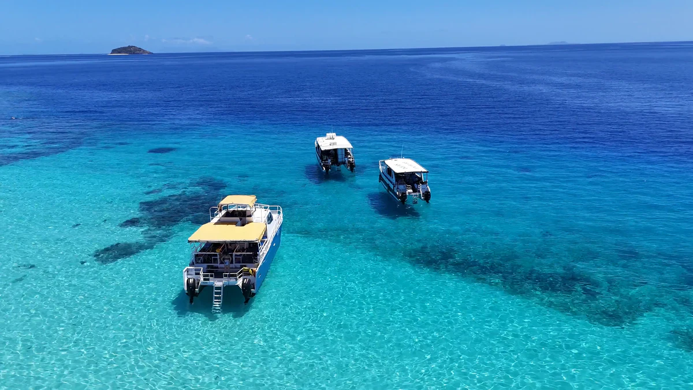

Экскурсии
Четыре способа выйти из гавани
Четыре маршрута из марины Хулхумале — каждый частный чартер всего судна.



Тарифы
Сколько стоит выйти в море
Каждая экскурсия — частный чартер всего судна: экипаж, топливо и портовые сборы включены.
Свободные даты
Когда судно свободно
Занятые дни отмечены. Выберите свободный — он перейдёт в вашу заявку.
Дополнительно
Что мы можем организовать
- Личный повар на борту
- Три блюда, приготовленные на ходу. USD 320 Добавить в заявку
- Фотограф
- Полдня на борту, обработанные файлы в течение недели. USD 450 Добавить в заявку
- Плавучий завтрак
- Подаётся на мелководье, на якоре. USD 180 Добавить в заявку
- Сервировка на косе
- Стол, зонт и маты, перенесённые на берег. USD 260 Добавить в заявку
- Трансферы из аэропорта и отелей
- Велана или ваш отель, в одну сторону. USD 120 Добавить в заявку
Депозит пятьдесят процентов подтверждает дату; остаток — за семь дней до выхода. Если капитан отменяет выход из-за погоды, вы переносите дату или забираете деньги.